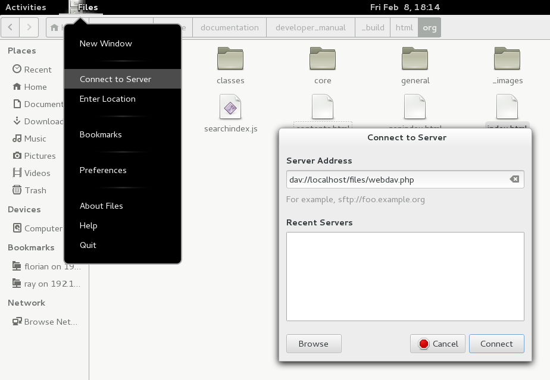
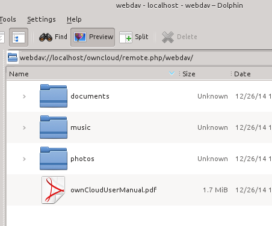
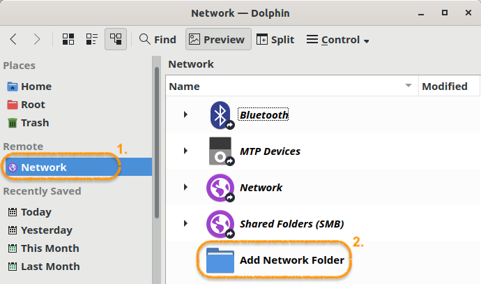
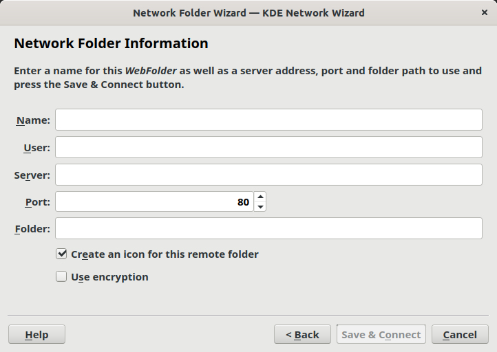
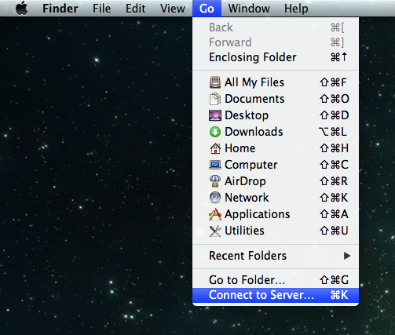
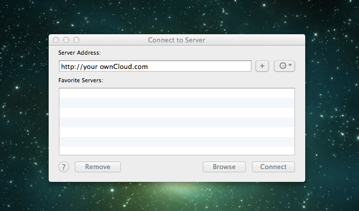
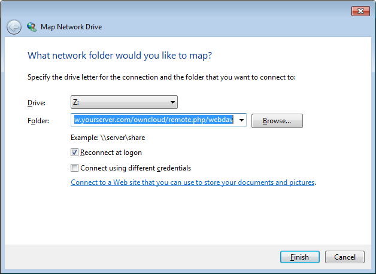

Accessing ownCloud Files Using WebDAV
- Introduction
- ownCloud Desktop and Mobile Clients
- WebDAV Configuration
- Accessing Files Using Linux
- Creating WebDAV Mounts on the Linux Command Line
- Known Issues
- Accessing Files Using Mac OS X
- Accessing Files Using Microsoft Windows
- Accessing Files Using Cyberduck
- Accessing public link shares over WebDAV
- Known Problems
- Problem: Windows Does Not Connect Using HTTPS.
- Problem: The File Size Exceeds the Limit Allowed and Cannot be Saved
- Problem: Accessing your files from Microsoft Office via WebDAV fails
- Problem: WebDAV Drive in Windows Using Self-Signed Certificate
- Problem: Upload Large Files or Upload Takes Long
- Problem: The Network Name Cannot be Found
- Problem: Network Discovery
- Accessing Files Using cURL
- Uploading Files to a Public Link (File Drop) Using cURL
Introduction
ownCloud fully supports the WebDAV protocol, and you can connect and synchronize with your ownCloud files over WebDAV. In this chapter you will learn how to connect Linux, Mac OS X, Windows and mobile devices to your ownCloud server via WebDAV. Before we get into configuring WebDAV, let’s take a quick look at the recommended way of connecting client devices to your ownCloud servers.
ownCloud Desktop and Mobile Clients
The recommended method for keeping your desktop PC synchronized with your ownCloud server is by using the ownCloud Desktop Client. You can configure the ownCloud client to save files in any local directory you want, and you choose which directories on the ownCloud server to sync with. The client displays the current connection status and logs all activity, so you always know which remote files have been downloaded to your PC, and you can verify that files created and updated on your local PC are properly synchronized with the server.
The recommended method for syncing your ownCloud server with Android and Apple iOS devices is by using the ownCloud Mobile apps.
To connect to your ownCloud server with the ownCloud mobile apps, use the base URL and folder only:
example.com/owncloud
In addition to the mobile apps provided by ownCloud, you can use other apps to connect to ownCloud from your mobile device using WebDAV. WebDAV Navigator is a good (proprietary) app for Android devices and iPhones. The URL to use on these is:
example.com/owncloud/remote.php/webdav
WebDAV Configuration
If you prefer, you may also connect your desktop PC to your ownCloud server by using the WebDAV protocol rather than using a special client application. Web Distributed Authoring and Versioning (WebDAV) is a Hypertext Transfer Protocol (HTTP) extension that makes it easy to create, read, and edit files on Web servers. With WebDAV you can access your ownCloud shares on Linux, Mac OS X and Windows in the same way as any remote network share, and stay synchronized.
| In the following examples, You must adjust example.com/ to the URL of your ownCloud server installation. |
Accessing Files Using Linux
You can access files in Linux operating systems using the following methods.
Nautilus File Manager
Use the davs:// protocol to connect the Nautilus file manager to your
ownCloud share:
davs://example.com/owncloud/remote.php/webdav
If your server connection is not HTTPS-secured, use dav:// instead of davs://.
|

Accessing Files with KDE and Dolphin File Manager
To access your ownCloud files using the Dolphin file manager in KDE, use the webdav:// protocol:
webdav://example.com/owncloud/remote.php/webdav
You can create a permanent link to your ownCloud server:
-
Open Dolphin and click Network in the left-hand column.

-
Click on the icon labeled Add a Network Folder.
The resulting dialog should appear with WebDAV already selected. -
If WebDAV is not selected, select it.
-
Click Next.
-
Enter the following settings:
-
Name: The name you want to see in the Places bookmark, for example ownCloud.
-
User: The ownCloud username you used to log in, for example admin.
-
Server: The ownCloud domain name, for example example.com (without https:// or http://).
-
Folder: Enter the path
owncloud/remote.php/webdav.
-
-
(Optional) Check the create icon checkbox for a bookmark to appear in the Places column.
-
(Optional) Provide any special settings or an SSL certificate in the Port & Encrypted checkbox.
Creating WebDAV Mounts on the Linux Command Line
You can create WebDAV mounts from the Linux command line. This is useful if you prefer to access ownCloud the same way as any other remote filesystem mount. The following example shows how to create a personal mount and have it mounted automatically every time you log in to your Linux computer.
-
Install the
davfs2WebDAV filesystem driver, which allows you to mount WebDAV shares just like any other remote filesystem. Use this command to install it on Debian/Ubuntu:sudo apt-get install davfs2 -
Use this command to install it on CentOS, Fedora, and openSUSE:
sudo yum install davfs2 -
Add yourself to the
davfs2group (this will be effective after the next login):sudo usermod -aG davfs2 <username> -
Then create an
ownclouddirectory in your home directory for the mountpoint, and.davfs2/for your personal configuration file:mkdir ~/owncloudmkdir ~/.davfs2 -
Copy
/etc/davfs2/secretsto~/.davfs2:sudo cat /etc/davfs2/secrets > ~/.davfs2/secrets -
Make the permissions read-write owner only:
chmod 600 ~/.davfs2/secrets -
Add your ownCloud login credentials to the end of the
secretsfile, using your ownCloud server URL and your ownCloud username and password:/home/<username>/owncloud <username> <password> -
Add the mount information to
/etc/fstab:https://example.com/owncloud/remote.php/webdav /home/<username>/owncloud davfs user,rw,auto 0 0 -
Then test that it mounts and authenticates by running the following command. If you set it up correctly you won’t need root permissions:
mount ~/owncloud -
You should also be able to unmount it:
umount ~/owncloud
Now every time you login to your Linux system your ownCloud share should
automatically mount via WebDAV in your ~/owncloud directory. If you
prefer to mount it manually, change auto to noauto in /etc/fstab.
Known Issues
Problem: Certificate Warnings
Solution
If you use a self-signed certificate, you will get a warning. To change
this, you need to configure davfs2 to recognize your certificate. Copy
mycertificate.pem to /etc/davfs2/certs/. Then edit
/etc/davfs2/davfs2.conf and uncomment the line servercert. Now add
the path of your certificate as in this example:
servercert /etc/davfs2/certs/mycertificate.pemAccessing Files Using Mac OS X
| The Mac OS X Finder suffers from a series of implementation problems and should only be used if the ownCloud server runs on Apache and mod_php. You can use a tool like ocsmount to mount without those issues. |
To access files through the Mac OS X Finder:
-
Choose .
The "Connect to Server" window opens. -
Specify the address of the server in the Server Address field.

For example, the URL used to connect to the ownCloud server from the Mac OS X Finder is:
https://example.com/owncloud/remote.php/webdav

-
Click Connect.
The device connects to the server.For added details about how to connect to an external server using Mac OS X, check the wikihow documentation
Accessing Files Using Microsoft Windows
It is best to use a suitable WebDAV client from the WebDAV Project page .
If you have to use the native Windows implementation, you can map ownCloud to a new drive. Mapping to a drive enables you to browse files stored on an ownCloud server the way you would files stored in a mapped network drive.
Using this feature requires network connectivity. If you want to store your files offline, use the ownCloud Desktop Client to sync all files on your ownCloud to one or more directories of your local hard drive.
| If you encounter any issues during the connection please also check the troubleshooting section below. |
|
Prior to mapping your drive, you must permit the use of Basic Authentication in the Windows Registry when using HTTP without SSL encryption. The procedure is documented in: Please follow the Knowledge Base article before proceeding. |
Mapping Drives With the Command Line
The following example shows how to map a drive using the command line. To map the drive:
-
Open a command prompt in Windows.
-
Enter the following line in the command prompt to map to the computer Z drive, where <drive_path> is the URL to your ownCloud server:
net use Z: https://<drive_path>/remote.php/webdav /user:youruser yourpassword
Example:
net use Z: https://example.com/owncloud/remote.php/webdav /user:youruser yourpasswordThe computer maps the files of your ownCloud account to the drive letter Z.
Though not recommended, you can also mount the ownCloud server using HTTP, leaving the connection unencrypted. If you plan to use HTTP connections on devices while in a public place, we strongly recommend using a VPN tunnel to provide the necessary security. An alternative command syntax is:
net use Z: \\example.com@ssl\owncloud\remote.php\dav /user:youruser yourpassword
Mapping Drives With Windows Explorer
To map a drive using the Microsoft Windows Explorer:
-
Migrate to your computer in Windows Explorer.
-
Right-click on Computer entry and select Map network drive… from the drop-down menu.
-
Choose a local network drive to which you want to map ownCloud.
-
Specify the address to your ownCloud instance, followed by /remote.php/webdav.
For example:
https://example.com/owncloud/remote.php/webdav
For SSL protected servers, check Reconnect at logon to ensure that the mapping is persistent upon subsequent reboots. If you want to connect to the ownCloud server as a different user, check Connect using different credentials. 
-
Click the Finish button.
Windows Explorer maps the network drive, making your ownCloud instance available.
Accessing Files Using Cyberduck
Cyberduck is an open source FTP and SFTP, WebDAV, and Amazon S3 browser designed for file transfers on Mac OS X and Windows.
| This example uses Cyberduck version 4.2.1. |
To use Cyberduck:
-
Specify a server without any leading protocol information. For example:
example.com
-
Specify the appropriate port. The port you choose depends on whether or not your ownCloud server supports SSL. Cyberduck requires that you select a different connection type if you plan to use SSL. For example:
80 (for WebDAV) 443 (for WebDAV (HTTPS/SSL))
-
Use the
More Optionsdrop-down menu to add the rest of your WebDAV URL into the `Path' field. For example:remote.php/webdav
Now Cyberduck enables file access to the ownCloud server.
Accessing public link shares over WebDAV
ownCloud provides the possibility to access public link shares over WebDAV.
To access the public link share, open:
https://example.com/owncloud/public.php/webdav
in a WebDAV client, use the share token as username and the (optional) share password as password.
| needs to be enabled in order to make this feature work. |
Known Problems
Problem: Windows Does Not Connect Using HTTPS.
Solution 1
The Windows WebDAV Client might not support Server Name Indication (SNI) on encrypted connections. If you encounter an error mounting an SSL-encrypted ownCloud instance, contact your provider about assigning a dedicated IP address for your SSL-based server.
Solution 2
The Windows WebDAV Client might not support TLSv1.1 / TLSv1.2 connections. If you have restricted your server config to only provide TLSv1.1 and above the connection to your server might fail. Please refer to the WinHTTP documentation for further information.
Problem: The File Size Exceeds the Limit Allowed and Cannot be Saved
You receive the following error message:
Error 0x800700DF: The file size exceeds the limit allowed and cannot be saved.
Solution
Windows limits the maximum size a file transferred from or to a WebDAV
share may have. You can increase the value FileSizeLimitInBytes in
HKEY_LOCAL_MacHINE\SYSTEM\CurrentControlSet\Services\WebClient\Parameters
by clicking on Modify.
To increase the limit to the maximum value of 4GB, select Decimal, enter a value of
4294967295, and reboot Windows or restart the WebClient service.
Problem: Accessing your files from Microsoft Office via WebDAV fails
Solution
Known problems and their solutions are documented in the KB2123563 article.
Problem: WebDAV Drive in Windows Using Self-Signed Certificate
Cannot map ownCloud as a WebDAV drive in Windows using self-signed certificate.
Solution
-
Go to your ownCloud instance via your favorite Web browser.
-
Click through until you get to the certificate error in the browser status line.
-
View the cert, then from the Details tab, select Copy to File.
-
Save to the desktop with an arbitrary name, for example
myOwnCloud.cer. -
Start, Run, MMC.
-
.
-
Select .
-
Dig down to Trust Root Certification Authorities, Certificates.
-
Right-Click .
-
Select Save Cert from the Desktop.
-
Select Place all Certificates in the following Store, click Browse,
-
Check the Box that says Show Physical Stores.
Expand out Trusted Root Certification Authorities.
select Local Computer, click OK to complete the Import. -
Check the list to make sure it shows up.
You will probably need to Refresh before you see it.
Exit MMC. -
Open Browser, select Tools, Delete Browsing History.
-
Select all but In Private Filtering Data, complete.
-
Go to Internet Options, Content Tab, Clear SSL State.
-
Close browser, then re-open and test.
Problem: Upload Large Files or Upload Takes Long
You cannot download more than 50 MB or upload large Files when the upload takes longer than 30 minutes using Web Client in Windows 7.
Solution
Workarounds are documented in the KB2668751 article.
Problem: The Network Name Cannot be Found
Error 0x80070043 "The network name cannot be found." while adding a network drive.
Accessing Files Using cURL
Since WebDAV is an extension of HTTP cURL can be used to script file operations.
To create a folder with the current date as name:
curl -u user:pass -X MKCOL \
"https://example.com/owncloud/remote.php/dav/files/USERNAME/$(date '+%d-%b-%Y')"To upload a file error.log into that directory:
curl -u user:pass -T error.log \
"https://example.com/owncloud/remote.php/dav/files/USERNAME/$(date '+%d-%b-%Y')/error.log"To move a file:
curl -u user:pass -X MOVE --header 'Destination: https://example.com/owncloud/remote.php/dav/files/USERNAME/target.jpg' https://example.com/owncloud/remote.php/dav/files/USERNAME/source.jpgTo get the properties of files in the root folder:
curl -X PROPFIND -H "Depth: 1" -u user:pass https://example.com/owncloud/remote.php/dav/files/USERNAME/ | xml_pp
<?xml version="1.0" encoding="utf-8"?>
<d:multistatus xmlns:d="DAV:" xmlns:oc="http://owncloud.org/ns" xmlns:s="http://sabredav.org/ns">
<d:response>
<d:href>/owncloud/remote.php/webdav/</d:href>
<d:propstat>
<d:prop>
<d:getlastmodified>Tue, 13 Oct 2015 17:07:45 GMT</d:getlastmodified>
<d:resourcetype>
<d:collection/>
</d:resourcetype>
<d:quota-used-bytes>163</d:quota-used-bytes>
<d:quota-available-bytes>11802275840</d:quota-available-bytes>
<d:getetag>"561d3a6139d05"</d:getetag>
</d:prop>
<d:status>HTTP/1.1 200 OK</d:status>
</d:propstat>
</d:response>
<d:response>
<d:href>/owncloud/remote.php/webdav/welcome.txt</d:href>
<d:propstat>
<d:prop>
<d:getlastmodified>Tue, 13 Oct 2015 17:07:35 GMT</d:getlastmodified>
<d:getcontentlength>163</d:getcontentlength>
<d:resourcetype/>
<d:getetag>"47465fae667b2d0fee154f5e17d1f0f1"</d:getetag>
<d:getcontenttype>text/plain</d:getcontenttype>
</d:prop>
<d:status>HTTP/1.1 200 OK</d:status>
</d:propstat>
</d:response>
</d:multistatus>To get the file id of a file, regardless of location, you need to make a PROPFIND request. This request requires two things:
-
A PROPFIND XML element in the body of the request method.
-
The path to the file that you want to find out more about
Here’s an example PROPFIND XML element, which we’ll store as propfind-fileid.xml.
<?xml version="1.0"?>
<a:propfind xmlns:a="DAV:" xmlns:oc="http://owncloud.org/ns">
<!-- retrieve the file's id -->
<a:prop><oc:fileid/></a:prop>
</a:propfind>| You could pass this directly to the Curl request. However, it can often be easier to create, maintain, and to share, if it’s created in a standalone file. |
With the file created, make the request by running the following Curl command:
curl -u username:password -X PROPFIND \
-H "Content-Type: text/xml" \
--data-binary "@propfind-fileid.xml" \
'http://localhost/remote.php/dav/files/admin/Photos/San%20Francisco.jpg'This will return an XML response payload similar to the following example. It contains the relative path to the file and the fileid of the file.
<?xml version="1.0"?>
<d:multistatus xmlns:d="DAV:" xmlns:s="http://sabredav.org/ns" xmlns:cal="urn:ietf:params:xml:ns:caldav" xmlns:cs="http://calendarserver.org/ns/" xmlns:card="urn:ietf:params:xml:ns:carddav" xmlns:oc="http://owncloud.org/ns">
<d:response>
<d:href>/remote.php/dav/files/admin/Photos/San%20Francisco.jpg</d:href>
<d:propstat>
<d:prop>
<oc:fileid>4</oc:fileid>
</d:prop>
<d:status>HTTP/1.1 200 OK</d:status>
</d:propstat>
</d:response>
</d:multistatus>
The example above’s been formatted for readability, using
xmllint,
which is part of libxml2. To format it as it is listed above, pipe the previous command to xmllint --format -.
|
Uploading Files to a Public Link (File Drop) Using cURL
To upload a file named file.txt to a public link with token 70mX9s7KOZwfmdi like https://example.com/s/70mX9s7KOZwfmdi having no password:
curl -k -T file.txt -u "70mX9s7KOZwfmdi:" \
-H 'X-Requested-With: XMLHttpRequest' \
https://example.com/public.php/webdav/file.txt